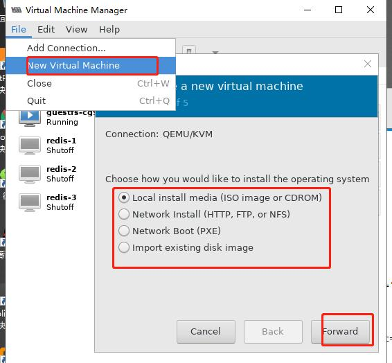

安装
1）确保CPU支持HVM
grep -E --color=auto "(vmx|svm)" /proc/cpuinfo
2）装载模块
modprobe kvm
3）验正：
存在/dev/kvm 或者 lsmod |grep kvm
4)安装kvm
yum install libvirt virt-manager libvirt-daemon-kvm qemu-kvm libguestfs-tools
注意yum网络源与系统版本不一致，导致libvirtd服务无法启动
5)启动服务
systemctl start libvirtd
使用wok kimchi插件管理kvm
Wok基于cherrypy的web框架，可以通过一些插件来进行扩展，例如：虚拟化管理、主机管理、系统管理。它可以在任何支持HTML5的网页浏览器中运行。
Kimchi是一个基于HTML5的KVM管理工具，是Wok的一个插件（使用Kimchi前一定要先安装了wok），通过Kimchi可以更方便的管理KVM。
[github地](https://github.com/kimchi-project)
1、安装epel源
yum install epel-release
2、安装wok
yum安装wok 与kimchi
3.启动wokd服务（启动wokd时，nginx也会同时启动）
systemctl start wokd
5、此时访问https://IP:8001即可看到登录页面，此登录的帐号密码为当前系统的帐号密码

注意：新建kvm网络接口后，如果页面不显示Virtualization选项
修改/etc/kimchi/template.conf
network = 接口类型 #默认是default(此为nat网卡类型的名称)
listen = 监听接口
安装虚拟机
使用qemu-kvm安装
使用virt-manager图形安装
virt-manager

使用virsh命令利用xml安装
virsh dumpxml redis-1 > vm1.xml
使用virt-install安装
virt-install是一个安装虚拟机的工具，
支持KVM,Xen和使用"libvirt"hypervisor来管理的虚拟机容器。
支持通过VNC、SPICE图形界面和文本模式安装虚拟机。
支持通过本地镜像文件或者远程NFS,HTTP,FTP或者PXE来安装虚拟机。
选项大体可分为下面几大类，同时对每类中的常用选项也做出简单说明：
◇一般选项：指定虚拟机的名称、内存大小、VCPU个数及特性等；
-n NAME, --name=NAME：虚拟机名称，需全局惟一；
-r MEMORY, --ram=MEMORY：虚拟机内在大小，单位为MB；
--vcpus=VCPUS[,maxvcpus=MAX][,sockets=#][,cores=#][,threads=#]：VCPU个数及相关配置；
--cpu=CPU：CPU模式及特性，如coreduo等；
可以使用qemu-kvm -cpu ?来获取支持的CPU模式；
◇安装方法：指定安装方法、GuestOS类型等；
-c CDROM, --cdrom=CDROM：光盘安装介质；
-l LOCATION, --location=LOCATION：安装源URL，支持FTP、HTTP及NFS等，
如ftp://172.16.0.1/pub；
--pxe：基于PXE完成安装；
--livecd: 把光盘当作LiveCD；
--os-type=DISTRO_TYPE：操作系统类型，如linux、unix或windows等；
--os-variant=DISTRO_VARIANT：某类型操作系统的变体，如rhel5、fedora8等；
-x EXTRA, --extra-args=EXTRA：根据--location指定的方式安装GuestOS时，用于传递给内核的额外选项，
例如指定kickstart文件的位置，--extra-args "ks=http://172.16.0.1/class.cfg"
--boot=BOOTOPTS：指定安装过程完成后的配置选项，如指定引导设备次序、使用指定的而非安装的kernel/initrd来引导系统启动等 ；
例如：
--boot cdrom,hd,network：指定引导次序；
--boot kernel=KERNEL,initrd=INITRD,kernel_args=”console=/dev/ttyS0”：指定启动系统的内核及initrd文件；
◇存储配置：指定存储类型、位置及属性等；
--disk=DISKOPTS：指定存储设备及其属性；格式为--disk /some/storage/path,opt1=val1，opt2=val2等；
常用的选项有：
device：设备类型，如cdrom、disk或floppy等，默认为disk；
bus：磁盘总结类型，其值可以为ide、scsi、usb、virtio或xen；
perms：访问权限，如rw、ro或sh（共享的可读写），默认为rw；
size：新建磁盘映像的大小，单位为GB；
cache：缓存模型，其值有none、writethrouth（缓存读）及writeback（缓存读写）；
format：磁盘映像格式，如raw、qcow2、vmdk等；
sparse：磁盘映像使用稀疏格式，即不立即分配指定大小的空间；
--nodisks：不使用本地磁盘，在LiveCD模式中常用；
◇网络配置：指定网络接口的网络类型及接口属性如MAC地址、驱动模式等；
-w NETWORK, --network=NETWORK,opt1=val1,opt2=val2：将虚拟机连入宿主机的网络中，其中NETWORK可以为：
bridge=BRIDGE：连接至名为“BRIDEG”的桥设备；
network=NAME：连接至名为“NAME”的网络；
其它常用的选项还有：
model：GuestOS中看到的网络设备型号，如e1000、rtl8139或virtio等；
mac：固定的MAC地址；省略此选项时将使用随机地址，但无论何种方式，对于KVM来说，其前三段必须为52:54:00；
--nonetworks：虚拟机不使用网络功能；
◇图形配置：定义虚拟机显示功能相关的配置，如VNC相关配置；
--graphics TYPE,opt1=val1,opt2=val2：指定图形显示相关的配置，此选项不会配置任何显示硬件（如显卡），而是仅指定虚拟机启动后对其进行访问的接口；
TYPE：指定显示类型，可以为vnc、sdl、spice或none等，默认为vnc；
port：TYPE为vnc或spice时其监听的端口；
listen：TYPE为vnc或spice时所监听的IP地址，默认为127.0.0.1，可以通过修改/etc/libvirt/qemu.conf定义新的默认值；
password：TYPE为vnc或spice时，为远程访问监听的服务进指定认证密码；
--noautoconsole：禁止自动连接至虚拟机的控制台；
◇设备选项：指定文本控制台、声音设备、串行接口、并行接口、显示接口等；
--serial=CHAROPTS：附加一个串行设备至当前虚拟机，根据设备类型的不同，可以使用不同的选项，格式为“--serial type,opt1=val1,opt2=val2,...”，
例如：
--serial pty：创建伪终端；
--serial dev,path=HOSTPATH：附加主机设备至此虚拟机；
--video=VIDEO：指定显卡设备模型，可用取值为cirrus、vga、qxl或vmvga；
◇虚拟化平台：虚拟化模型（hvm或paravirt）、模拟的CPU平台类型、模拟的主机类型、hypervisor类型（如kvm、xen或qemu等）以及当前虚拟机的UUID等；
-v, --hvm：当物理机同时支持完全虚拟化和半虚拟化时，指定使用完全虚拟化；
-p, --paravirt：指定使用半虚拟化；
--virt-type：使用的hypervisor，如kvm、qemu、xen等；所有可用值可以使用’virsh capabilities’命令获取；
◇其它：
--autostart：指定虚拟机是否在物理启动后自动启动；
--print-xml：如果虚拟机不需要安装过程(--import、--boot)，则显示生成的XML而不是创建此虚拟机；默认情况下，此选项仍会创建磁盘映像；
--force：禁止命令进入交互式模式，如果有需要回答yes或no选项，则自动回答为yes
--dry-run：执行创建虚拟机的整个过程，但不真正创建虚拟机、改变主机上的设备配置信息及将其创建的需求通知给libvirt；
-d, --debug：显示debug信息；
实际使用中，其必须提供的选项仅包括--name、--ram、--disk（也可是--nodisks）及安装过程相关的选项。此外，有时还需要使用括--connect=CONNCT选项来指定连接至一个非默认的hypervisor。
例：
创建一个名为vm2的虚拟机，内存大小为512MB，使用制作的映像文件/root/VM/cirros-0.3.0-x86_64-disk-2.img
virt-install --name vm2 --ram 512 --vcpus=1 --disk /root/VM/cirros-0.3.0-x86_64-disk-2.img --network bridge=r2,model=virtio --force --import --nographics --serial=pty --console=pty
制作镜像文件
yum install libguestfs libguestfs-tools
virt-sysprep [--options] -d domain_name
--remove-user-accounts：移除用户
--root-password：设定root密码
--intsall：指定封装安装的程序包
--operation：执行要清理的操作列表，使用--list-operations列出所有的操作
--network：指定封装的使用的网络
domain必须是shut off状态
virt-sysprep -d redis-1